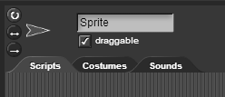

3. Bossing Your Sprites Around
Added sprites will just appear alongside an existing sprite in the sprite corral. If you want to make certain sprites do different things, you will need to make sure that the scripts you make are in the appropriate sprite's scripting area.
To navigate between each of your sprite's scripting areas, click on the sprite icon in the sprite corral. You will know what sprite you have clicked on by looking at the region above the scripting area.

In this region, you will see the costume that your sprite is wearing. You can change the name of the sprite by editing its text box i.e. in the image above, you would edit the section that says “Sprite.” To the left of the sprite's image, there are three small circular buttons. Play around with those and see what they do!
In the bottom section of this region, you will see three different tabs -- scripts, costumes, and sounds. To make your sprite's do different things, you will have to make the scripts for that particular sprite in its own scripts tab.